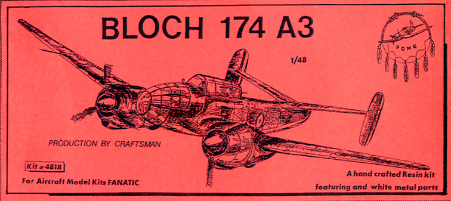
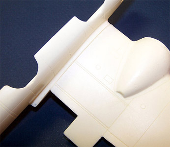
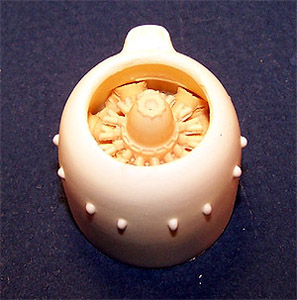
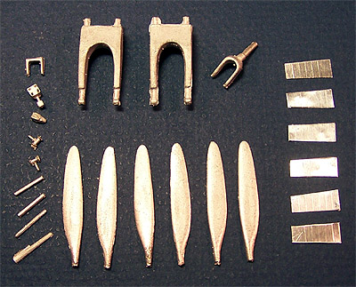
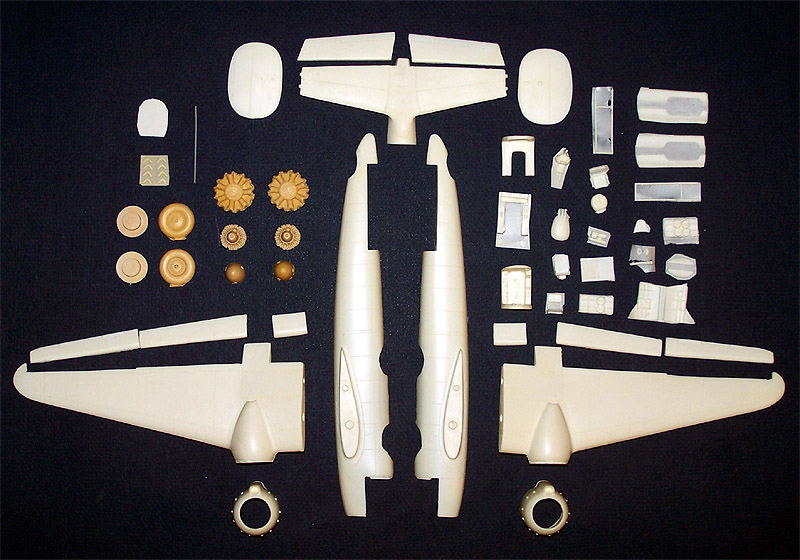

{kind=link}


Pend O’Rielle 1/48 Bloch Mb 174 A3

Kit #4818 Collector’s Market Value $75.00
Images and text Copyright © 2005 by Matt Swan
Developmental Background
The French Air Force was looking for a new fast bomber in 1936 and at their request Bloch developed the Mb 170 prototype which first flew in February of 1938. The prototype saw several modifications that ultimately resulted in the three-place Mb 174. In January of 1939 the first Mb 174 took to the sky. The aircraft displayed exceptional handling characteristics and good all around performance capabilities. Very quickly the aircraft was put into production and fifty examples were ready for service by May of 1940 when the German Army invaded France.
So now this three-seat, twin-engined armed reconnaissance bomber is only in service with one group, II/33 but even so the aircraft distinguished itself. Its combat service was somewhat brief at this point and it showed itself more than capable of holding its own against German aircraft then in use. If fact only three Mb 174s were lost to enemy air action. When it was seen that their cause was lost French air crews destroyed many of the 174s on the ground rather than let them fall into Axis hands. Some surviving units were operated by the Vichy GR II/33 from Tunis in North Africa, and several fought beside Allied forces after the TORCH landings. Ultimately the few surviving aircraft were regulated to training duties until the end of the war.
The Bloch 174 was powered by a pair of Gnome-Rhone 14N 14 cylinder radial engines, each rated at 1,140 horse power and could obtain a top speed of 329 mph. The aircraft featured an internal bomb bay that could accommodate 880 pounds of bomb load and could also carry a selection of flares on underwing racks. Armament consisted of seven 7.5mm machine guns with two being mounted in the wings and the balance on dorsal and ventral wobble mounts.
The Kit
Pend O’Rielle, I don’t know about you but that just says “Irish” to me. In truth this is originally a French model manufacture. Lionel Larmanger founded the company in 1989 in France as Maquettes Phenix which was later changed to ECP Phenix by the early 90s. In 1996 the company relocated to Spokane Washington, USA and was renamed Pend O’Rielle. I have no idea where he got that name but they have been producing resin kits by that name until this day.


The kit comes in a small oblong box well packaged with the wings in separate zip-lock bags, the fuselage halves wrapped in bubble wrap and several smaller bag of detail parts filling out the box. As with most resin kits the wings are cast as single solid pieces. They have no flash, very minimal mold separation seams and slight pour stubs at the engine mount faces. Wing dihedral appears to be locked into the pieces very well, no warpage is evident in either wing and all panel lines appear crisp and consistent. The landing gear bay is devoid of detail but does have two large mounting holes to accept the white metal landing gear. Too bad they are not properly spaced for the gear studs and some modification will be needed here. The wings feature two large mounting studs that mate to the fuselage sides very well. As can be seen in the picture above left there is little gap remaining with the parts simply pressed together.
The engines are fairly nice coming in two pieces; a main bank of cylinders that lack any ignition harness detail (okay, that can be scratch built) and a well detailed gear reduction box. The engine fits nicely into the cowling and to the wing nacelle face. The propellers consist of resin hubs and white metal blades – I’ll talk more about these pieces later. The fuselage shows the most problem in the kit. This is a hollow fuselage of split design. There is warpage here and the halves do not line up very well. Some serious hot water baths are going to be needed before this issue is resolved.

Like the wings the fuselage displays nice consistent panel lines but there is some casting crude deep within the lines that will need to be scribed out. Throughout the kit there are few if any micro bubbles that break the surface of parts but if you hold the fuselage to a light you can see that there are plenty of bubbles hiding just below the surface so use sandpaper with extreme caution.
All flight controls with the exception of the rudders are provided as separate pieces, plenty of small parts for the cockpit and crew area are provided including seats and sidewall panels. It’s with these parts that most of the flash is found in this kit but even that is thin and light. An hour with a fresh razor knife should take care of most of the issue here.
Included with the kit are two small bags of metal parts; the first are the white metal pieces for the propellers, landing gear and fine cockpit details. These pieces are all nicely cast with little or no flash. Included here are small items like rudder control bars, gun mounts and reflective gun sight base. The second bag of metal pieces is a small set of ventilation grills for the engines. These appear to be thin sheets of stainless with etched lines for bending. The last bag of items are the clear parts. The manufacture has provided two complete sets of clear parts that all display excellent clarity and very good frame line definition. These are all vacuformed pieces done in a solid clear plastic. This should give the modeler ample pieces to build the kit with the canopy open or closed.
This is what our parts inventory looks like now, we have 8 clear parts (4 of which may not be necessary), eighteen white metal pieces, six stamped metal pieces and sixty-five resin pieces for a total of ninety-seven pieces in the box.

Decals and Instructions
The instructions for this kit consist of three mimeographed A4 sized sheets. They begin with a very good historical background of the aircraft in both English and French. Following this is a complete parts map with part numbers and names. The second sheet contains nine exploded view construction steps along with an exterior painting guide and decal placement guide. Here we are given exterior colors by name only with no corresponding paint manufacture codes or FS/RLM numbers. The final sheet simply gives us a four view line drawing of the aircraft. This is a model that will require careful study and plenty of dry fitting before assembling.
Conclusions
This is an interesting kit to say the least. Battle Axe did this in injection molded plastic not long ago so there are other alternatives to the resin build. The parts are well cast with good quality resin, the white metal pieces are very well done with little or no flash. The clear parts are very nice with good clarity and frame definition. Most of the parts seem to fit together well with little warpage other than the one fuselage half. Instructions are okay and somewhat brief. The lack of decals could be an issue but is not insurmountable. There are no aftermarket items for the Mb 174 so any other details you care to add must be scratch built. I give this model a good recommendation but remind you that it is for experienced models only that have had previous adventures with resin kits.